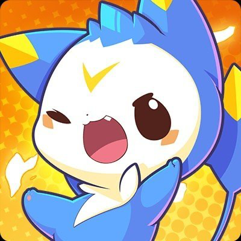

非公式 🇯🇵 日本語情報まとめ
ロコキングダム
速報
CBT・Creator Program・事前登録・限定報酬など、
「取り逃したくない情報」を公式発表中心に整理。
公式サイト・公式ニュース等で確認できた情報を 「公式確認済み」として掲載しています。
Discord・SNS・コミュニティ等の未確認情報は、 公式情報と混同しないよう区別して掲載します。
🔥 最新情報・重要アップデート
🕒 最終更新：2026年10月3日
🦆 クワックテスト（Closed Beta Test）
テスト開始：2026年10月27日
Roco Kingdom（洛克王国：世界）のクローズドβテストが実施予定です。
募集開始：2026年8月26日
募集終了：2026年10月20日
テスト参加資格は応募者の中から選考されます。
応募時のアンケート回答が参加資格の選考に使用されます。
🎨 Global Creator Program
Roco Kingdomのグローバルクリエイター募集が開始されています。
ゲーム攻略、動画、配信、イラストなど、 Roco Kingdomに関するコンテンツを制作するクリエイター向けのプログラムです。
申請＝承認ではありません。
参加資格・承認状況・特典などは公式発表を基準に確認してください。
公式サイト・公式SNSなどで確認できた内容を優先して掲載します。
Discord・SNS・コミュニティ由来の情報は、 公式確認前の情報として区別します。
📌 今やること
① クワックテストへ応募
公式サイトの「テストに応募」からアンケートに回答。 アンケート回答はテスト参加資格の選考に必要です。
テストへ応募するとゲームの事前登録も同時に完了します。 別途事前登録する必要はありません。
公式サイトへ② 友達招待
テスト応募後、「お友達を招待」から専用リンクを利用できます。
条件を満たしている応募者について、 成功した事前登録招待数が多いプレイヤーが優先的に選出される と公式に案内されています。
招待数は選考に関係あり🦆 クワックテスト（CBT）
参加資格の選考
- 「テストに応募」からアンケートへ回答。
- アンケート回答は参加資格の選考に必要。
- 応募後に友達招待リンクを利用可能。
- 条件を満たす場合、成功した友達招待数が多い応募者が優先。
- 結果は募集期間終了後、公式サイトおよび登録メールへ案内予定。
📱 応募フォームで確認される内容
- 希望プラットフォーム
- iOS端末モデル
- Android RAM容量
- PC GPU
- 直近6か月で遊んだゲームジャンル
- Roco Kingdomを知った経路
- 希望言語
PCではGTX 1050 / 1650クラスから RTX 4070等のハイエンドGPUまで選択肢が用意されています。
🎁 取り逃し注意
事前登録限定報酬
公式サイトで事前登録し、 Open Beta開始後にゲームをダウンロードすると、 事前登録限定報酬の獲得案内があります。
日本語公式ページでは 限定ロコカード「ネオキージ」が案内されています。
登録メールアドレスは正式サービス後のログインや ゲーム内報酬の受け取りにも使用すると公式が案内しています。 メールアドレスを忘れないようにしましょう。
🎨 Creator Program
Creator応募の目安
- 居住国で成人年齢に達していること。
- Roco Kingdomへの強い関心があること。
- メインプラットフォームで継続的にコンテンツ制作。
- SNSフォロワー1,000人以上
- または直近1か月に同時視聴50人以上で配信
公式は最低目安を満たしていないCreatorからの応募も歓迎しています。 高品質なコンテンツを制作する可能性があるCreatorは 招待される場合があると案内されています。
参加手順
- 公式Creator Serverへ参加。
- サーバー参加後に応募フォームを記入。
- 審査を待つ。
- 承認されると「Creator」ロールが付与。
Creator Benefits
- Traffic Boost
- Cash Rewards
- Asset Support
- Content Guide
🌏 Roco Kingdomとは？
Roco Kingdomは、 オープンワールド・クリーチャー収集RPG。 ジニ（Jinies）たちと一緒に広大な世界を冒険します。
- 400種類以上のジニ
- 広大なオープンワールド
- フレンドと一緒に遊べるマルチプレイ
- 戦略性を重視したPvP
- 魔法学院から始まる冒険
- ジニとのコーディネート
- 家づくりなどの生活要素
Steam公式ページでは開発・パブリッシャーとして MoreFun Studiosが掲載されています。
📰 公式ニュース
📅 スケジュール
公式からの追加発表を確認。
🔗 公式リンク
📝 更新履歴
2026/10/03
サイト公開。CBT・Creator Program・事前登録報酬・公式ニュースを整理。
2026/10/03
クワックテスト募集期間、10月27日CBT開始情報、
友達招待による選考優先情報を追加。
2026/10/03
Creator Program参加条件・特典・応募手順を追加。